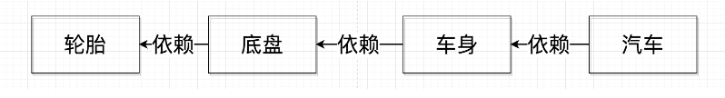
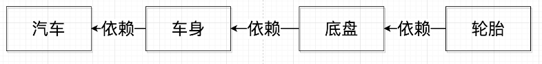

Spring IOC
Spring IOC
一、谈谈你对Sping IOC的了解
1.控制反转是一种思想，不是一个具体实现。
2.IOC的思想就是将原本在程序中创建的控制权，交由Spring框架来管理。
二、为什么叫控制反转？
1.控制：指的是对象创建（实例化、管理）的权力
2.反转：控制权交给外部环境管理（Spring框架，IOC容器）
3.控制反转的重要软件设计思想就是，依赖倒置原则。
4.什么是依赖倒置原则，假设我们设计一辆汽车，先设计轮子→底盘→车架，最后根据车身设计好整个汽车。这里就出现了一个“依赖”关系：汽车依赖车身，车身依赖底盘，底盘依赖轮子。

这样设计，可维护性很低。假设我们要把轮子尺寸增大，底盘设计就需要改，车身也需要改，同理汽车设计都需要改。
5.现在我们换一种思路，我们先设计汽车的大概样子，轮子依赖底盘， 底盘依赖车身， 车身依赖汽车。

6.这就是依赖导致原则，把原本的高层建筑物“倒置”过来。高层并不用管底层是怎么实现的。这样就不会出现前面的“牵一发动全身”的情况。
7.控制反转就是，依赖倒置原则的一种代码设计思路，具体采用的方法就是所谓的依赖注入

7.为了理解这几个概念，我们还是用上面汽车的例子。只不过这次换成代码。我们先定义四个Class，车，车身，底盘，轮胎。然后初始化这辆车，最后跑这辆车。代码结构如下：

8.把轮胎尺寸改成动态的

为了让整个程序正常运行，我们需要做以下改动

9.维护成本这么高，所以我们需要进行控制反转，及上层控制下层，而不是下层控制上层。
所谓依赖注入就是，就是把底层作为参数传入上层类，实现上层控制下层。

什么是控制反转容器(IoC Container)呢？其实上面的例子中，对车类进行初始化的那段代码发生的地方，就是控制反转容器。

10.IOC创建时我们不需要了解创建的细节是什么。下面这是我们自己手动创建的依赖注入的初始化代码。

这个过程中，我们需要了解整个Car/Framework/Bottom/Tire类构造函数是怎么定义的，才能一步一步new/注入。
而IOC是反过来的，先从最上层开始向下找依赖关系，到达底层之后再往上一步一步new.

这里IoC Container可以直接隐藏具体的创建实例的细节，在我们来看它就像一个工厂：

这就像工厂的客户，我们只需要了解工厂请求一个Car实例，按照配置自动生成。
— Jan 31, 2024
Search
Made with ❤ and at Earth.